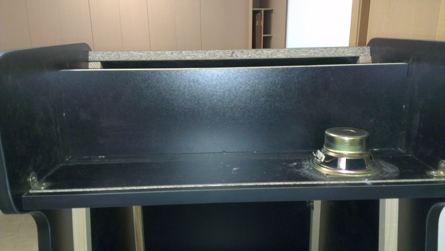
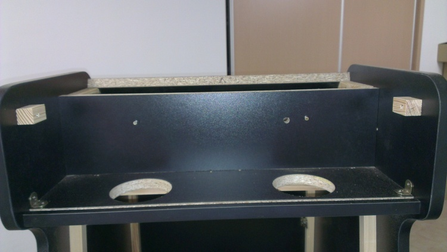
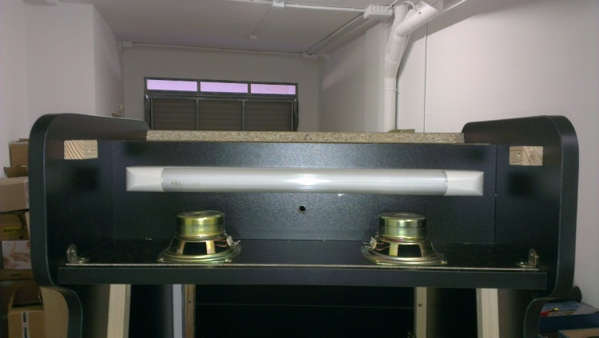

Capítulo 6.16 Construcción de máquina recreativa - El Sonido
Para el sonido de la máquina he utilizado unos altavoces viejos que tenía por casa y que hace tiempo usaba para el ordenador.

Figura 6.16.1 Altavoces desmontados
Una vez desmontados los he posicionado sobre la marquesina a ver como los repartía.

Figura 6.16.2 Altavoz situado sobre marquesina
Cuando he encontrado la posición en la que quería situarlos he hecho los agujeros pertinentes.

Figura 6.16.3 Agujeros altavoces realizados
Después de realizar los agujeros he montado los altavoces y el tubo de luz.

Figura 6.16.4 Altavoces y el tubo de luz de la marquesina
Una vez montado todo lo anterior he montado los embellecedores de los altavoces.

Figura 6.16.5 Embellecedores de los altavoces montados